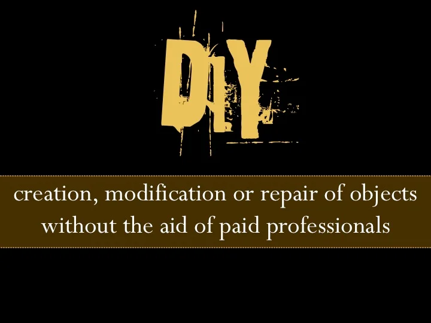
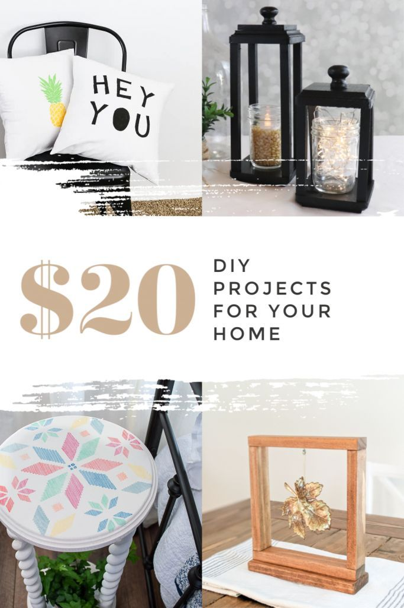

1. Local Hardware Stores: Many local hardware stores offer
workshops, classes, or demonstrations on various DIY topics, from basic
home repairs to more advanced projects. They may also have knowledgeable
staff who can offer advice and guidance.

2. Community Centers: Check with community centers,
libraries, or adult education programs in your area. They often host
workshops and classes on DIY home improvement topics, and you may even
find community-led groups focused on specific projects or interests.
3. Online Forums and Groups: Joining online forums or social
media groups dedicated to DIY home improvement can connect you with a
wealth of knowledge and support. Platforms like Reddit (such as r/DIY),
Facebook groups, or specialized forums offer spaces where you can ask
questions, share ideas, and learn from others' experiences.
4. Neighborhood Networks: Connect with your neighbors or
local community groups to see if there are any informal networks or
clubs focused on home improvement. You might find like-minded
individuals who are willing to share tools, expertise, or even
collaborate on projects together.

5. Homeowners Associations: If you live in a neighborhood
with a homeowners association (HOA), they may have resources or
guidelines related to home improvement projects. They could also provide
recommendations for local contractors or professionals if you need
additional assistance.
6. Volunteer Organizations: Some volunteer organizations,
like Habitat for Humanity, offer opportunities for community members to
learn construction and home repair skills while contributing to projects
that benefit others in need. Participating in these programs can be a
rewarding way to gain hands-on experience and give back to your
community.
7. Local Experts and Professionals: Don't hesitate to reach
out to local contractors, carpenters, or tradespeople for advice or
guidance on DIY projects. They may be willing to offer tips,
recommendations, or even hands-on assistance, especially for smaller
tasks or questions.
8. DIY Workshops and Events: Keep an eye out for DIY
workshops, home improvement expos, or community events in your area.
These gatherings often feature demonstrations, vendors, and experts who
can provide valuable information and support for your projects.